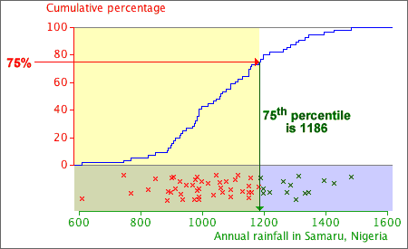

Finding percentiles
Given any proportion, p, between 0 and 1, we can find a value x such that approximately this proportion, p, of values is x or lower in our data set. This is called the p'th quantile in the data set. When p is given as a percentage, the same value is called the p'th percentile.
The p'th percentile is the value x such that p percent of the data set are x or lower.
Percentiles can be read from a graph of the cumulative distribution function.

Details (optional)
It may not be possible to find a value, x, such that exactly p percent of the data are lower, expecially if the sample size is not a multiple of 100. If n = 56, the cumulative distribution function is a step function that rises by 1/56 at each data value, so it is impossible to find an x-value for which exactly say 43% of values are lower.
There is no universally accepted general definition of percentiles and different statistical programs give slightly different values. The differences are minor and should not affect your interpretation of the data.